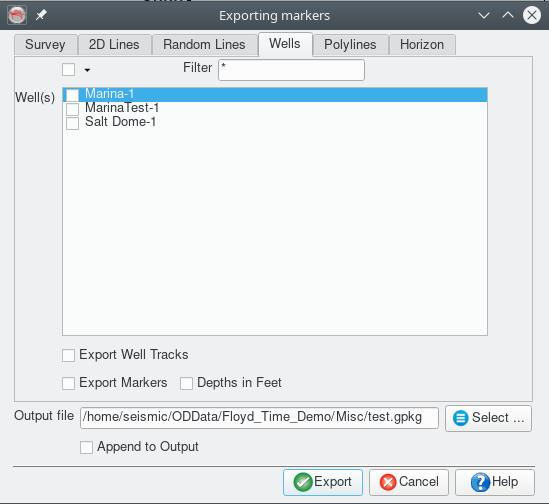

This plugin, for the open source seismic interpretation platform OpendTect Version 6.4.0 or later, exports OpendTect data to a GeoPackage database. GeoPackage is an open, non-proprietary, platform-independent, self describing standards-based data format for geospatial data.
Description
The plugin adds a "Geopackage Export" item to the Survey-Export main menu. Selecting the item opens a tabbed dialog box for selecting the various elements to export and the destination file name. The following table shows the OpendTect data elements supported and the corresponding tables created in the exported GeoPackage database.
| OpendTect Item | GeoPackage Table Name | Geometry | Notes |
|---|---|---|---|
| Survey Box | Survey | Polygon | Single attribute, the survey name |
| 2D Line Geometry | 2DLines | LineString | Single attribute, the line name |
| 2D Line Stations | 2DStations | Points | Two attributes, the line name and station number |
| Random Lines | RandomLines | LineString | Single attribute, the random line name |
| Wells | Wells | Points | Three attributes, the well name, UWID and status (not currently set by OpendTect) |
| Open Polygons | PolyLines | LineString | Single attribute, the polyline name. The z values of the polyline are not exported |
| Closed Polygons | Polygons | Polygon | Single attribute, the polygon name. The z values of the polygon are not exported |
| 2D and 3D Horizons | Set by the user | Point | Single attribute, the horizon z value in millisecs or metres depending on the Z domain of the survey |
Notes
- It is possible to append to an existing database. This is primarily used for exporting multiple horizons/attributes to the same GeoPackage.
- Appending does not overwrite items already in the GeoPackage it will just add another copy to the respective table.
- The plugin requires the survey to have a projection based CRS defined.
- On Windows the folder containing the plugin DLL's must be added to the PATH environment variable either by editing the corresponding system variable (Control Panel>System and Security>System - Advanced system settings - Environment Variables) or adding a line like "@set PATH=%HOMEPATH%.od\bin\win64\Release;%PATH%" (adjust "%HOMEPATH%.od\bin\win64\Release" to reflect your installation) to the bat script used to start OpendTect.
- The GeoPackage format is supported by major GIS software packages. The following figure shows display of data exported from OpendTect using the plugin in the open source GIS package, QGIS.
Input Parameters
The dialog box associated with the plugin has a file entry control to select the output file, a check box to allow appending to the output file instead of overwriting and 8 tabs to select the content to export:
Survey tab

2D Lines tab
Random Lines tab
Wells tab
